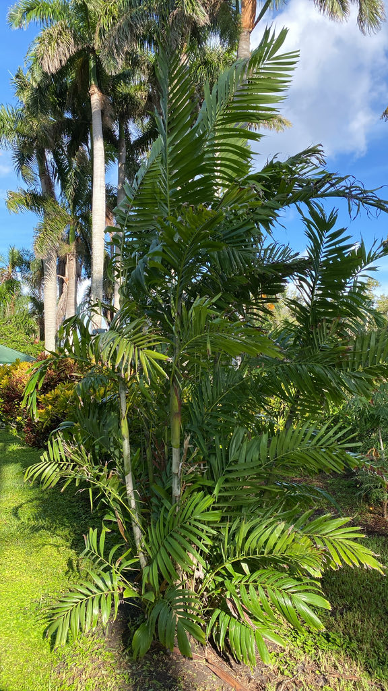

- For over a century, this palm was sold worldwide under the name Ptychosperma macarthurii — honoring an Australian botanist — yet a 2024 Kew Gardens monograph reassigned the cultivated plant to P. propinquum, a species native to eastern Indonesia. Australia never had it. The name on old nursery tags is simply wrong.
- To make the taxonomy wilder: many plants sold as P. macarthurii are actually a third species, P. keiense. You can settle the question on the spot — P. propinquum has leaflets in a neat, regular row; P. keiense's leaflets are scattered and irregular. The frond is a field ID key.
- This palm resists lethal yellowing disease, a bacterial infection spread by planthoppers that has killed millions of coconut palms across Florida and the Caribbean. That resistance isn't incidental — it's one of the main reasons horticulturists kept planting it through the 20th century.
- The clumping habit is structural strategy, not just aesthetics. Slender trunks packed together flex and shed wind rather than snap in it, and outer stems shelter inner ones during cold snaps — useful insurance at Bradenton's edge of the palm's cold-hardiness range.
The Macarthur Palm is native to eastern Indonesia and New Guinea, where it grows in lowland tropical rainforests near riverine floodplains and springs, typically in moist, organic soils from sea level to several hundred meters elevation. It is a clumping understory and sub-canopy palm of the humid tropics, with a wider ecological tolerance than most of its Ptychosperma relatives.
In cultivation the palm has been widely planted throughout the tropics and subtropics for well over a century, reaching Florida landscapes primarily as an ornamental. UF/IFAS rates it for USDA Hardiness Zones 10B through 11, making it best suited to Miami-Dade, Monroe, and Collier counties, with borderline hardiness in the Bradenton area. It is not native to North America.
- The common name — and for most of the last century the botanical name — honors Sir William Macarthur (1800–1882), an Australian botanist, viticulturist, and horticulturist who built one of the 19th century's most remarkable plant collections at Camden Park, New South Wales.
- He grew more than 3,000 species and cultivars, supplied herbarium specimens to Kew, and dispatched his own gardener to New Guinea specifically to collect new plants.
- The genus name Ptychosperma comes from the Greek for 'folded seed,' a direct reference to the deeply grooved seed inside each fruit — a useful diagnostic detail. Crack one open and the groove is unmistakable. The 2024 Kew monograph Palms of New Guinea reassigned the widely cultivated plant from P. macarthurii to P. propinquum on morphological, distributional, and phylogenetic grounds; the old name is now restricted to Australian populations and will likely persist in the trade for years.
- In its native rainforest habitat the Macarthur Palm grows in dense, multi-stemmed clumps that read almost like bamboo — slender grey-ringed trunks just a few inches across, packed tightly together.
- That architecture is functional: a single planting creates an immediate screen or tropical focal point, and the flexible, clustered stems shed wind rather than snap, which is precisely why this palm handles Florida's storm seasons better than many solitary-trunked alternatives.
The bright red fruits are the palm's most significant wildlife contribution. Produced nearly year-round on pendant clusters below the crownshaft, they attract fruit-eating birds that swallow them whole and disperse the seeds — the same dynamic that has allowed this palm to naturalize beyond cultivated areas in some tropical regions.
In a Florida garden setting, expect mockingbirds, catbirds, and other frugivores to work the clusters when fruit is ripe.
The small white flowers attract pollinating insects, though the inflorescences are modest rather than showy, and no documented specialist pollinator or butterfly host relationship has been found for this species in Florida. Its wildlife value here lies primarily in the fruit, the shelter offered by the dense clump, and the year-round cover the evergreen canopy provides.
Propagation is by seed or by division of the clump. Seeds germinate readily in warm, moist conditions. New stems arise as offsets from the base, which allows established clumps to be divided — an easier route to propagation than most solitary palms.
Small, creamy-white to light green flowers are carried on branched, pendant inflorescences roughly two feet long that emerge from just below the crownshaft. Both male and female flowers appear on the same inflorescence (the palm is monoecious). Flowering can occur throughout the year, though it tends to peak seasonally.
Round to oval drupes about a half-inch in diameter ripen from green to a vivid bright red — the most eye-catching feature of the palm at any season. Fruits are produced in pendant clusters and ripen more or less year-round in Florida's climate. Each contains a single deeply grooved seed.
Pinnate (feather-type) fronds up to six feet long with 23 to 28 pairs of leaflets on each side. The leaflets are arranged in a regular, even row — a useful identification point — and have distinctive praemorse tips: the ends look bitten or torn off rather than coming to a clean point. The overall effect is soft and feathery.
Fronds spiral around the crownshaft, which is a smooth, bright green cylinder visible just below the crown.
Multiple slender, upright trunks growing in a tight clump, each typically 2 to 3 inches in diameter. The trunks are grey below and green just beneath the crownshaft, ringed with closely spaced horizontal leaf-scar lines. The overall impression — lots of thin, tall, cane-like stems packed together — often surprises visitors who expect something more tree-like.
Look first at the overall form: a dense thicket of slender grey-ringed trunks topped with bright green crownshafts, all packed closely together. Scan the base for new stems pushing up from the soil — that basal suckering is what makes this a clump rather than a grove of separate trees.
Look just below each crownshaft for the pendant fruit clusters; when ripe, those vivid red drupes are visible from a good distance. Up close, check the leaflet tips — the frayed, torn-looking ends are a hallmark of the genus.
The bright red fruits are eaten by birds but are not a recognized human food, and no toxicity to people or pets has been documented in the sources we consulted. No known hazards from handling the foliage. Otherwise harmless — just not on anyone's menu.
This palm sits at the northern edge of its reliable cold-hardiness range at Bradenton. UF/IFAS rates it for USDA Zones 10B through 11; Bradenton is Zone 10A. Established specimens typically handle brief dips near freezing, but a hard or prolonged cold snap can cause significant damage.
The dense, multi-stemmed clump offers some mutual protection — interior trunks are partially sheltered by outer ones — which may explain why the species performs reasonably well here despite technically being one zone outside its comfort zone.
Salt-spray tolerance is listed as low by multiple sources. Coastal sites at Palma Sola Botanical Park with regular salt exposure are better suited to native or more salt-tolerant palms.


- © David Vanderbilt (CC-BY-NC), via iNaturalist
- © Joanne Walker (CC-BY-NC), via iNaturalist
- © Maria Escobar (CC-BY-NC), via iNaturalist
- © Denise Sosa (CC-BY-NC), via iNaturalist